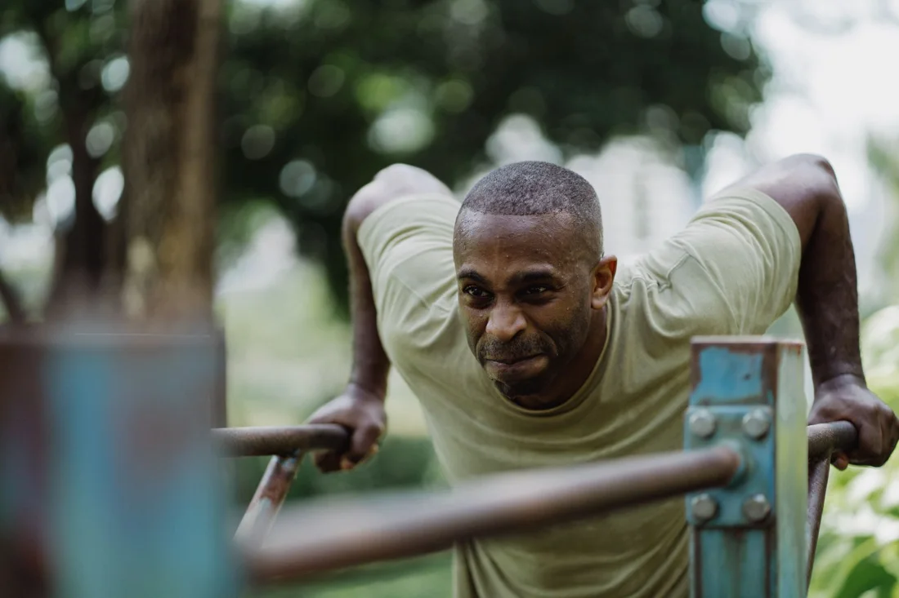
01 / STRENGTH
Stärker werden.
Push, Pull und Beine. Saubere Grundlagen statt zufälliger Wiederholungen.
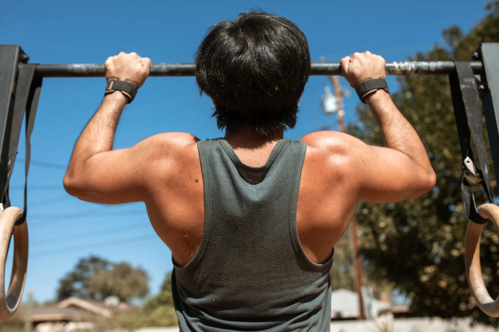
VIERNHEIM / BODYWEIGHT TRAINING
Weniger Maschinen. Mehr du.
Trainiere Kraft, Kontrolle und Skills in einer kleinen Gruppe, die dich weiterbringt.
01 / DIE METHODE
Der erste saubere Liegestütz. Dein nächster Klimmzug. Mehr Kontrolle im Handstand. Wir zerlegen große Ziele in Schritte, die zu deinem Level passen.

Push, Pull und Beine. Saubere Grundlagen statt zufälliger Wiederholungen.
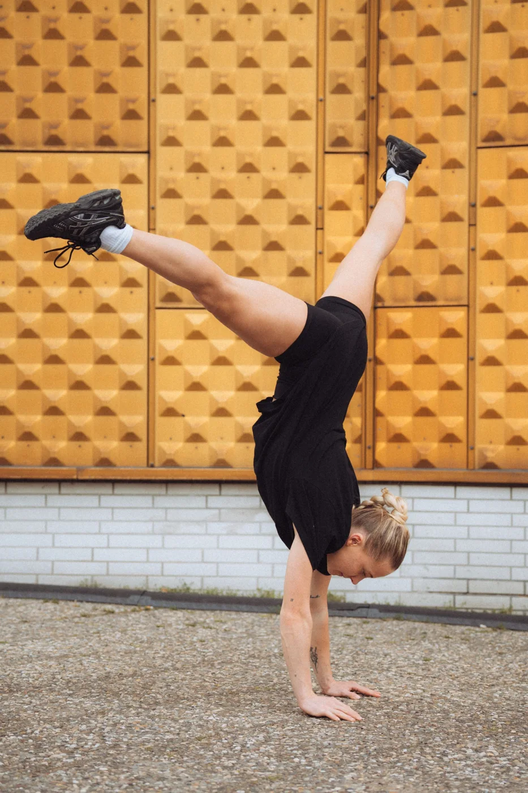
Von der ersten Progression bis zu neuen Skills. In deinem Tempo.
Aktive Mobilität und stabile Gelenke als Teil jeder Trainingseinheit.
DEIN ZIEL / DEIN EINSTIEG
Calisthenics beginnt bei deinem aktuellen Stand. Wähle einen Schwerpunkt und entdecke, wie eine passende Einheit aussehen kann.
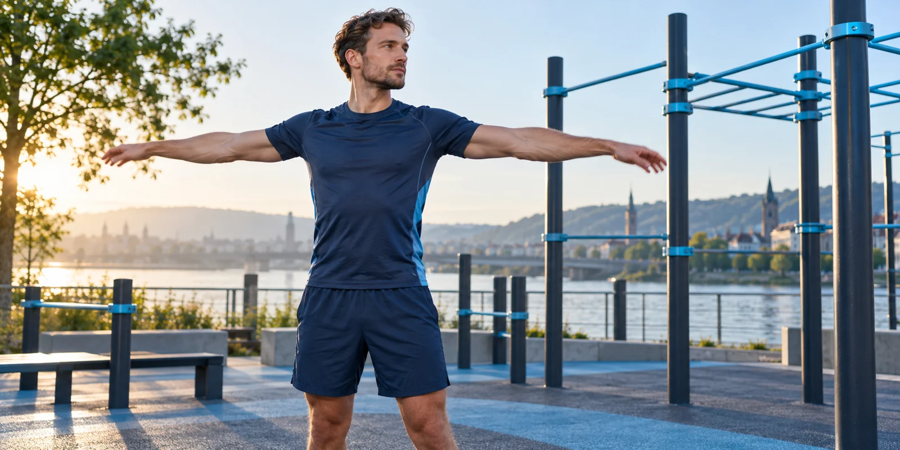
Du lernst zunächst Stand, Körperspannung und die grundlegenden Bewegungsmuster kennen. Eine höhere Auflage, kürzere Wege oder Unterstützung machen den Einstieg anpassbar.
Du musst für den Einstieg keinen Klimmzug können.
Wenn die Grundlagen sitzen, kann die Belastung über Hebel, Bewegungsumfang oder Wiederholungen verändert werden. Die Variante bleibt so gewählt, dass deine Ausführung kontrolliert bleibt.
Fortschritt kann auch mehr Kontrolle bei derselben Übung bedeuten.
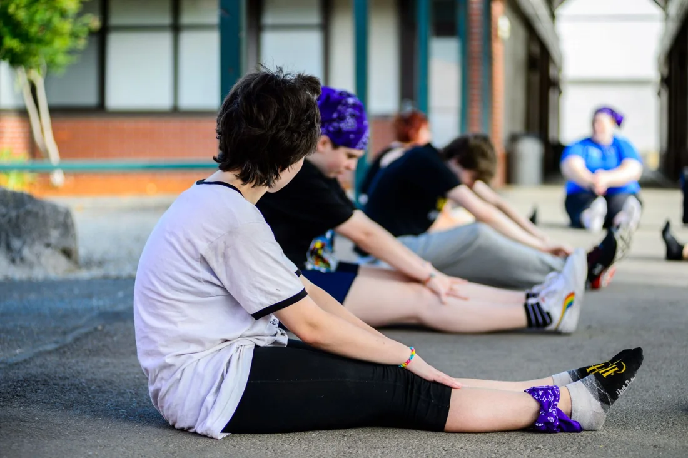
Handstand oder komplexere Stützvarianten setzen passende Grundlagen voraus. Im Beispielkonzept stehen Körperspannung, kontrollierte Positionen und eine geeignete Vorbereitung im Mittelpunkt.
Keine feste Zeitgarantie und kein Versprechen bestimmter Skills.
Neue Trainingsszenen sind KI-erstellte Symbolbilder und zeigen keinen tatsächlichen Trainer oder Kursort.
KEIN EGO. KEINE ABKÜRZUNG.
Du musst noch keinen Klimmzug können.
Du musst nur bereit sein, anzufangen.
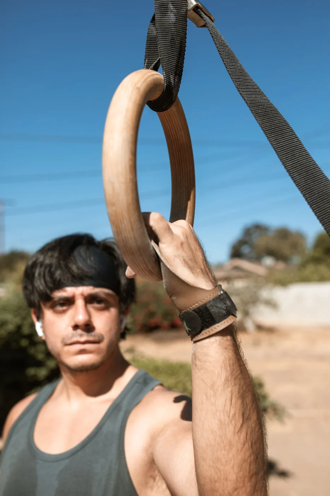
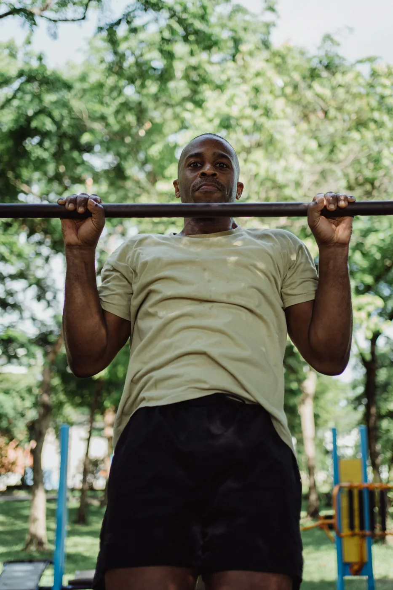
SYMBOLFOTO · TRAINERPROFIL FOLGT02 / DEIN COACH
Hi, ich bin Alex.
Dein Coach für den nächsten Schritt.
In unserem Beispielangebot begleitet dich Alex durch jede Einheit: mit verständlichen Übungen, passenden Varianten und Aufmerksamkeit für deine Ausführung.
Maximal zehn Personen bedeuten: Raum für Fragen, Feedback und ein Training, bei dem du mitkommst.
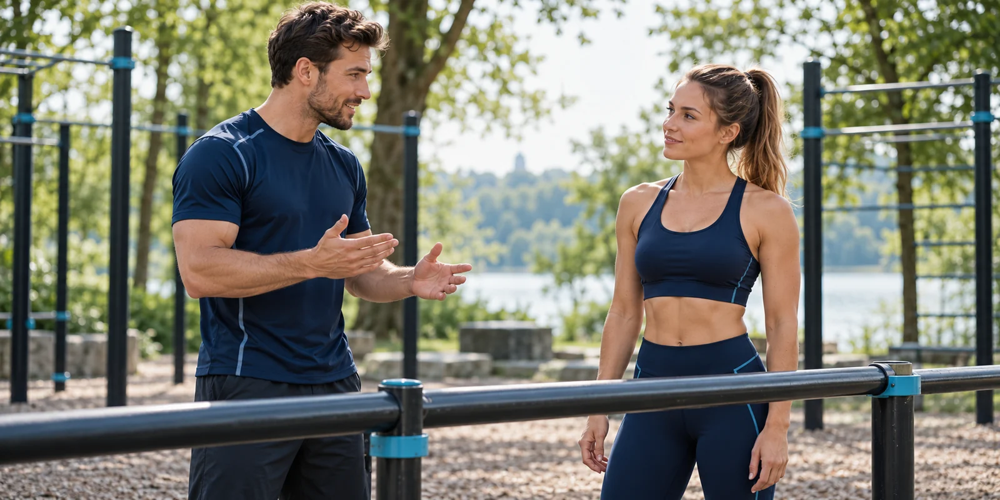
SYMBOLBILD / KI-ERSTELLTKLEINE GRUPPE / KLARE AUFGABE
Maximal zehn Personen pro Einheit geben dem Beispielkonzept einen persönlichen Rahmen.
Die Gruppe kann an demselben Bewegungsmuster arbeiten, während jeder eine passende Variante nutzt. So bleibt die Einheit gemeinsam und die Belastung individuell anpassbar.
Aufgabe und Variante besprechen. Wie sieht eine kontrollierte Wiederholung aus?
Bewegung beobachten, verständliche Hinweise geben und bei Bedarf vereinfachen.
Kurz einordnen: Was war stabil, was braucht beim nächsten Versuch mehr Aufmerksamkeit?
Geplantes Demo-Trainingskonzept. Trainerqualifikationen werden vor einem tatsächlichen Kursstart ergänzt.
DEINE EINHEIT / 60 MINUTEN MIT PLAN
Jede Einheit hat eine klare Struktur. Du weißt, was du trainierst, und bekommst eine Variante, die zu deinem aktuellen Stand passt.
Locker bewegen, Gelenke vorbereiten und kurz besprechen, wie du dich heute fühlst. Die Belastung wird daran angepasst.
Ein Schwerpunkt pro Einheit: etwa Zugtechnik, Körperspannung oder Balance. Erst verstehen, dann sauber wiederholen.
Push, Pull, Beine und Rumpf. Trainiere mit kontrollierten Wiederholungen und Pausen, statt jede Runde bis zum Limit zu gehen.
Intensität herunterfahren, Beweglichkeit üben und den nächsten kleinen Trainingsschritt festhalten.
Beispielablauf für das Demoangebot. Inhalte und Zeitaufteilung können je nach Gruppe und Schwerpunkt variieren.
DEIN FORTSCHRITT / OHNE EGO
Alle trainieren gemeinsam. Nicht alle machen dieselbe Variante. Eine gute Progression fordert dich, ohne deine Technik zu überfordern.
Stabile Positionen, kontrollierte Bewegungen und eine passende Einstiegsvariante.
Regelmäßig üben und beobachten, welche Wiederholungen wirklich sauber gelingen.
Eine Stellschraube verändern: Bewegungsumfang, Wiederholungen oder Übungsvariante.
Gezielte Vorübungen für neue Fähigkeiten. Tempo und Ziele bleiben individuell.
Komm im echten Angebot etwa zehn Minuten früher, bring Wasser und geeignete Sportkleidung mit und erzähle dem Coach von deiner bisherigen Trainingserfahrung. Du brauchst weder einen fertigen Klimmzug noch einen Handstand.
03 / DEINE ROUTINE
Wähle deinen Einstieg. Alle drei wöchentlichen Einheiten sind im Beispiel-Monatspreis enthalten. Pro Einheit trainieren höchstens zehn Personen.
Kraft-Basics · Push & Pull · saubere Technik
Balance · Core · deine nächste Progression
Ganzkörpertraining · Mobility · Teamenergie
Beispielzeiten · Trainingsort: Calisthenics-Park Viernheim (Demo, genauer Treffpunkt folgt). Keine Live-Verfügbarkeiten. Bei schlechtem Wetter wird im echten Angebot eine Ausweichregelung benötigt.
04 / DRAUSSEN. ZUSAMMEN.
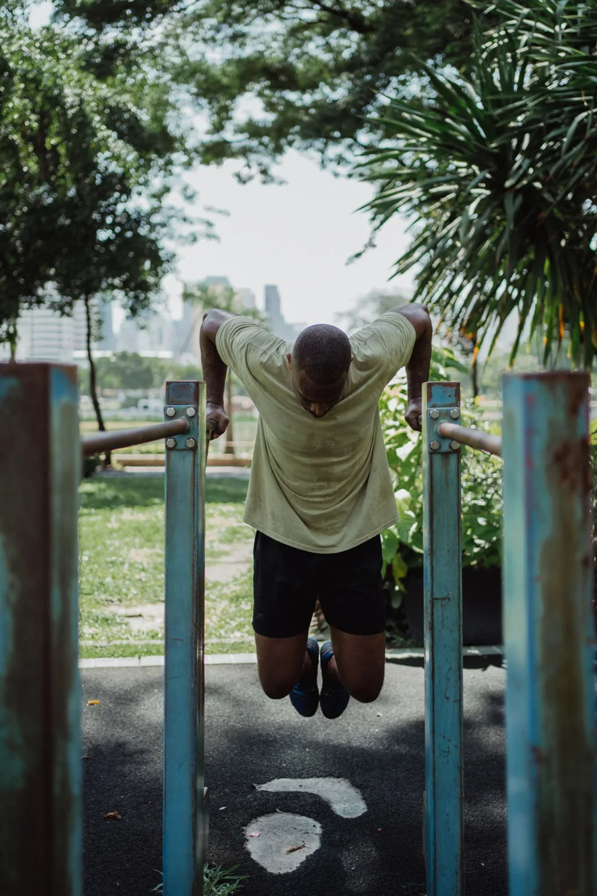
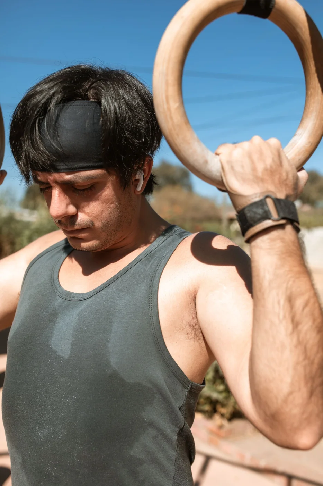
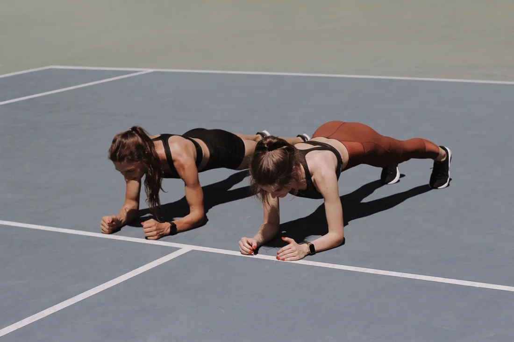
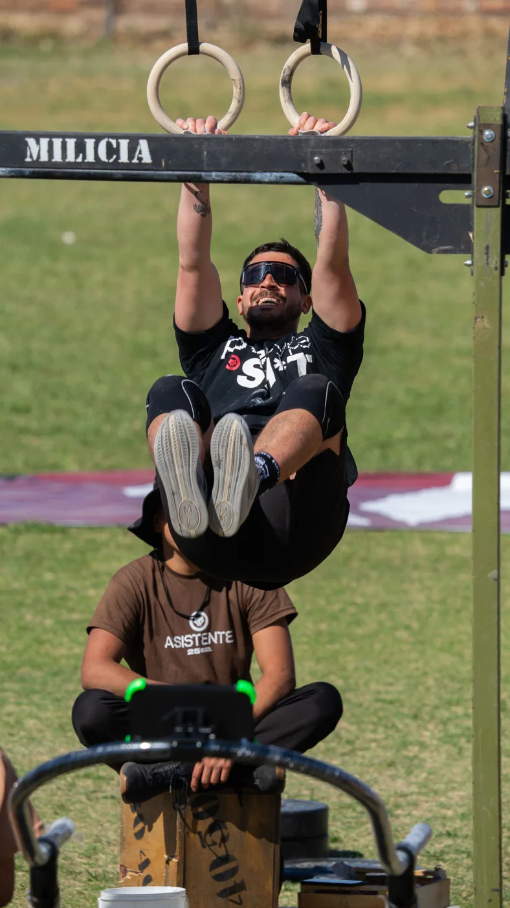
Die Bilder zeigen Trainingsstimmung und Symbolmotive, keine tatsächlichen Mitglieder oder Trainer von Testkunde.
KOSTENLOS / DIREKT HIER AUSPROBIEREN
Eine Sammlung für Beine, Oberkörper und Rumpf. Wähle eine Übung und öffne ihre Bildanleitung mit Bewegungsschritten, leichterer Variante und Technikhinweisen – ganz ohne Anmeldung.
Allgemeine Trainingsinformationen für Erwachsene. Bei Beschwerden oder bestehenden Einschränkungen kläre die Teilnahme vorher ab. Bei Schmerzen, Schwindel oder Unwohlsein abbrechen.
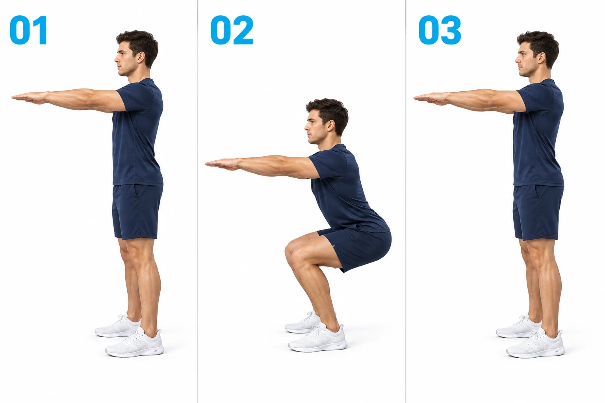
Ein kontrollierter Einstieg für Beine und Hüfte.
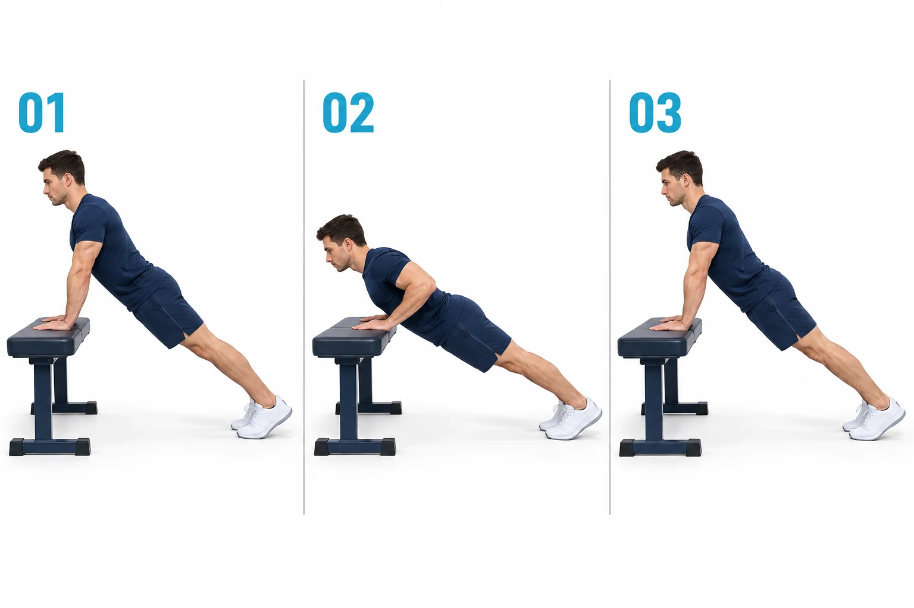
Die Liegestütz-Basis mit einer leichteren Belastung.
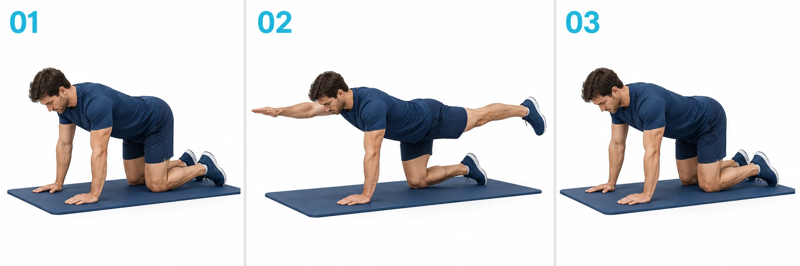
Körperspannung und Kontrolle im Vierfüßlerstand.
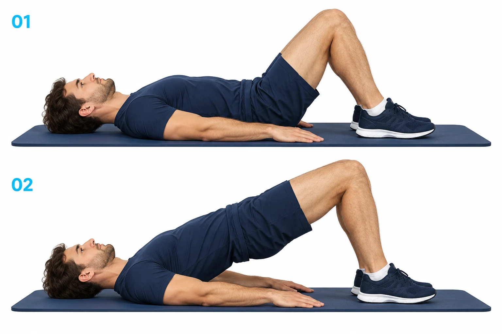
Becken kontrolliert anheben und wieder ablegen.
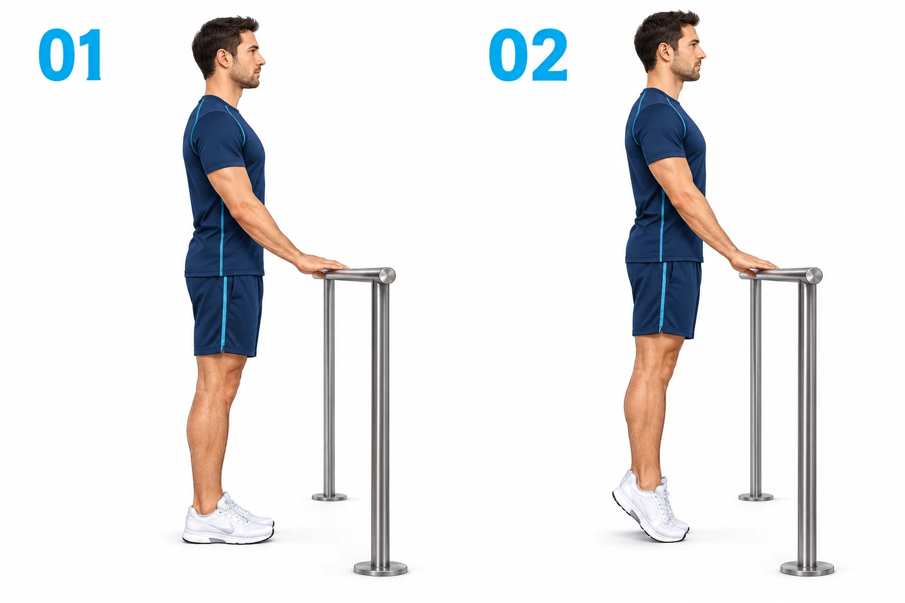
Aufrichten, Balance halten und die Fersen langsam senken.
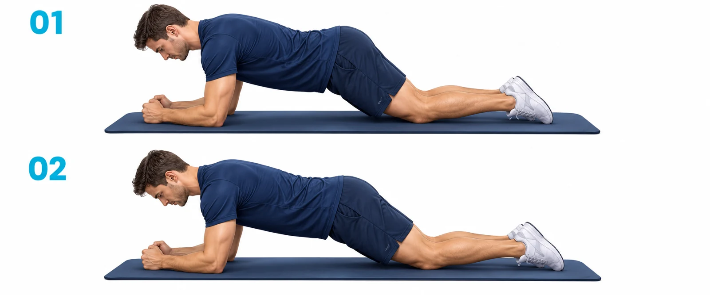
Eine kurze, kontrollierte Halteposition für den Rumpf.
Du möchtest wissen, welche Variante zu dir passt?
05 / DEINE MITGLIEDSCHAFT
Ein Angebot, das in deinen Alltag passt. Persönlich angeleitetes Gruppentraining mit Platz für deinen Fortschritt.
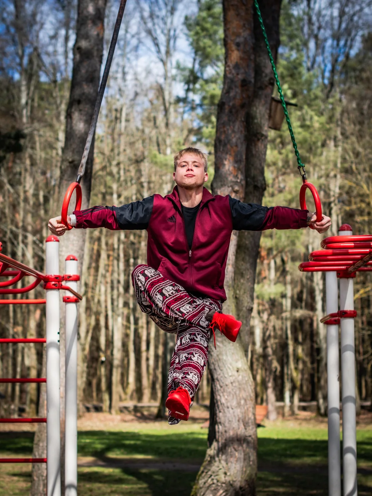
pro Person / Monat · Gesamtpreis im Demoangebot
Demonstration: kein Vertragsabschluss, keine Zahlung. Laufzeit, Kündigung, Reservierung und weitere Vertragsbedingungen stehen für ein echtes Angebot noch nicht fest.
CALISTHENICS VERSTEHEN
Ein paar Wörter begegnen dir im Training immer wieder. Hier findest du ihre Bedeutung auf einen Blick.
DEIN TRAININGSBOGEN
Halte nach einer Einheit fest, welche Variante du genutzt hast und wie kontrolliert sie sich angefühlt hat. Der Bogen hilft dir, beim nächsten Training an einem konkreten Punkt anzuknüpfen.
Trainingsbogen herunterladenKostenlose Textvorlage für eigene Notizen. Kein Konto und keine Datenübermittlung an diese Website.
ORIENTIERUNG / KEIN LEISTUNGSVERSPRECHEN
So könnte ein Einstieg aussehen. Die Schritte sind ein Beispiel und richten sich im tatsächlichen Training nach deinem Stand, deiner Teilnahme und deinem Wohlbefinden.
Ablauf, Geräte und grundlegende Bewegungen erkunden. Geeignete Varianten finden und Fragen stellen.
Fokus: sicher startenBekannte Übungen erneut ausprobieren. Gleiche Ausgangspositionen und ein ruhiges Tempo üben.
Fokus: Orientierung gewinnenMit dem Trainer prüfen, ob Umfang oder Variante angepasst werden können. Bei Bedarf bewusst vereinfachen.
Fokus: passend dosierenNotieren, was sich stabiler anfühlt und was du weiter üben möchtest. Den nächsten Schwerpunkt besprechen.
Fokus: sinnvoll weitergehenVOR DEINER ERSTEN EINHEIT
Du brauchst keine aufwendige Ausrüstung. Bewegliche Sportkleidung, passende Schuhe und Wasser sind eine gute Grundlage.
Ein eigener Gerätepark ist im Demo-Konzept nicht erforderlich. Tatsächlicher Treffpunkt, Ausstattung und Wetterregeln werden zum Kursstart bekannt gegeben.
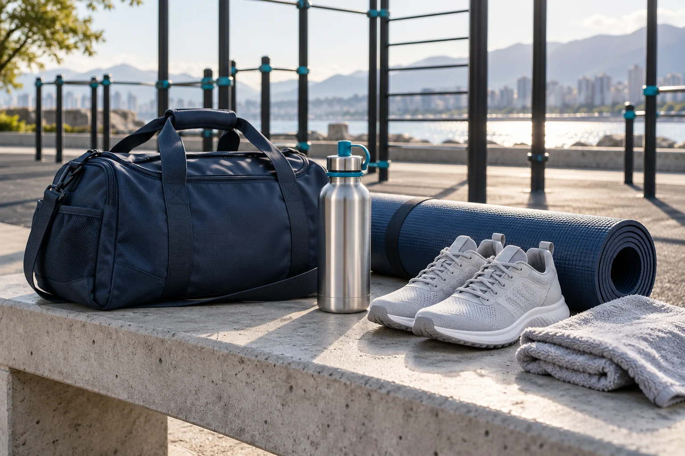
ZWISCHEN DEN EINHEITEN
Drei angebotene Einheiten pro Woche sind der Kursrahmen. Wie oft und wie intensiv du teilnimmst, sollte zu deinem Stand und deiner Erholung passen.
Achte darauf, wie du dich vor und nach einer Einheit fühlst. Anhaltende Beschwerden brauchen Abklärung.
Weniger Wiederholungen, eine leichtere Variante oder eine Pause können die passende Entscheidung sein.
Teile dem Trainer mit, wenn eine Variante nicht gut passt. Der nächste Schritt muss nicht jedes Mal schwerer sein.
06 / GUT ZU WISSEN
Calisthenics nutzt vor allem das eigene Körpergewicht. Stangen, Barren oder Ringe können Übungen ergänzen. Im Mittelpunkt stehen kontrollierte Bewegungen, Kraft und Körperspannung.
Die drei Termine sind das beispielhafte Wochenangebot. Teilnahmehäufigkeit und Belastung sollten zu deinem Trainingsstand passen. Verbindliche Teilnahme- und Reservierungsregeln stehen für den realen Kurs noch nicht fest.
Im Demo-Konzept können Teilnehmende am gleichen Bewegungsmuster mit unterschiedlichen Varianten arbeiten. Die Variante wird nach Kontrolle, Erfahrung und aktueller Belastbarkeit gewählt.
Viernheim ist der Beispielstandort. Ein tatsächlicher Treffpunkt ist noch nicht festgelegt. Die Fotos zeigen Symbolmotive und keinen bestätigten Kursort.
Wetterregeln, Ausweichorte und mögliche Absagen werden vor dem echten Kursstart festgelegt. Aktuell handelt es sich um ein Demoangebot.
Ja. Alle sechs Bildanleitungen sind direkt zugänglich. Klicke auf „Bildanleitung öffnen“. Die vollständige Anleitung erscheint direkt auf dieser Website; die Bildtafel lässt sich zusätzlich in voller Größe ansehen.
Nein. Im Beispielkonzept werden Übungen an unterschiedliche Trainingsstände angepasst. Starte mit Grundlagen und steigere die Belastung schrittweise.
Im Demoangebot sind die drei angeleiteten Trainingseinheiten pro Woche enthalten. Die Obergrenze beträgt zehn Personen pro Einheit. Echte Reservierungsregeln werden vor dem Start festgelegt.
Sportkleidung, geeignete Schuhe, Wasser und bei Bedarf ein Handtuch. Persönliche Trainingshilfen sind optional.
Diese Website ist eine öffentliche Demo. Die Auswahl zeigt dir den Anmeldeablauf, reserviert aber keinen Platz und übermittelt keine Daten.
Bei Schmerzen, bestehenden Erkrankungen oder Unsicherheit kläre die Teilnahme vorher medizinisch ab. Unterbrich Übungen bei Beschwerden. Das Training ersetzt keine medizinische Beratung oder Behandlung.
DEIN NÄCHSTER SCHRITT BEGINNT HIER.